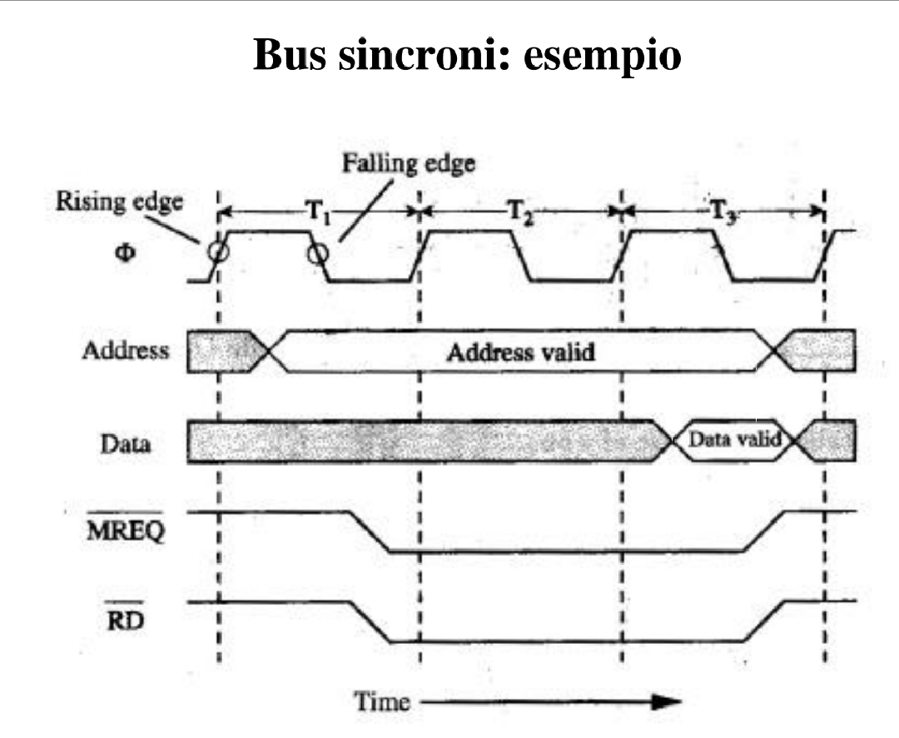

I BUS SINCRONI

BUS SINCRONO
La linea di controllo è dotata di un segnale di sincronizzazione (bus clock) ed esiste un
protocollo di comunicazione scandito dai cicli di clock (in generale diverso (ma
sicnronizzato) da quello della CPU).
Questo tipo di protocollo permette di ottenere bus molto veloci.
Svantaggi:
Ogni device deve essere sincronizzato.
Lunghezza limitata (per evitare che i ritardi nei fronti dovuti alla propagazione
producano disallineamenti).
Tutti i dispositivi devono potere lavorare alla frequenza imposta dal bus clock.
I bus processor-memory sono spesso sincroni in quanto:
hanno dimensioni ridotte.
hanno pochi elementi connessi